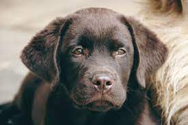
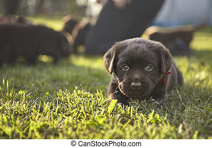
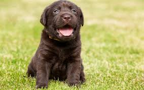
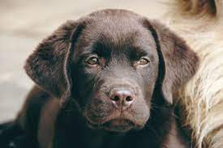
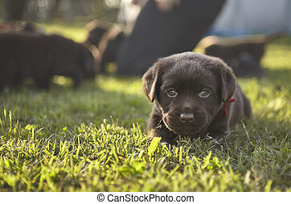
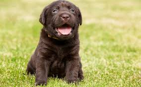

Tob
Idade: 3 meses
Caracteristicas:
Aventureiro porém medroso
Tob é um amigo e tanto. Ele foi encontrado logo depois de nascer,
trouxemos ele para o abrigo e já iniciamos com as vacinas. Ele é
bastante medroso e adora brincar. Ele é perfeito para crianças e não
tem problema com outros cachorros. O Tob já come ração de filhote e
está muito ansioso para fazer parte de uma familia.
 




